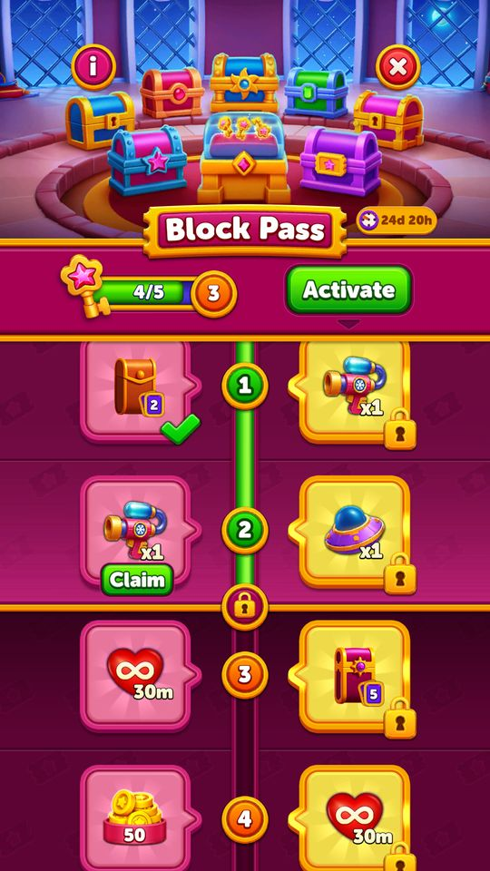
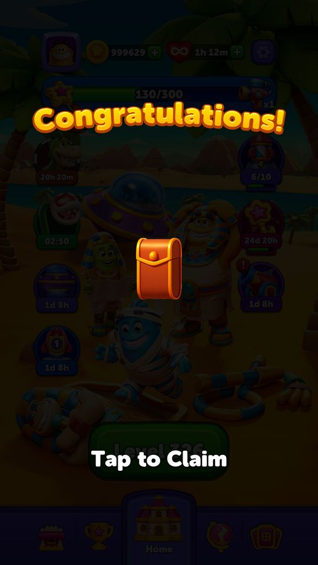

BlockOut — Tiền đi đâu, event trả gì: sổ phiên chơi và 12 case kinh tế
Mục lục bài phân tích
- 1. Một phiên thật: quà +
 100 coin không bù được một lần cứu 900 coin
100 coin không bù được một lần cứu 900 coin - 2. Play On: ba nguồn giá, một nguồn có hiệu lực
- 3. So sánh các điểm tiêu theo đơn vị thực
- 4. Daily Gift: ô chọn là lớp trình bày, bảng trọng số mới quyết định kinh tế
- 5. Block Pass: đừng đọc chi phí từng bước thành ngưỡng tổng
- 6. UFO Rise: áp lực bảo toàn tiến độ tăng theo khoảng giữa checkpoint
- 7. Event hoạt động và offer đủ điều kiện là hai quyết định khác
- Bổ sung 13/10: UI, kho cục bộ và server là ba mức bằng chứng
- 8. Casebook kinh tế và vòng đời
- 9. Popup và thời gian: trần config chưa phải số popup chắc chắn
- 10. Đánh giá và quyết định thiết kế
- Nguồn đã dùng
Phân tích sâu 10/10/2026 · native/client 1006 · cache runtime trước và sau phiên LDPlayer level 350.
Giá cứu ván tăng nhanh hơn thu nhập cơ sở, còn event phân phối thêm cơ hội chơi. Một Play On đầu tiên giá 900 coin tương đương 45 lần thắng Regular ở mức thưởng cơ sở 20 coin. Nhưng một phiên thật không chỉ có coin: Daily Gift cấp booster, race trả coin, pass bán quyền cứu ván và tăng dung lượng mạng, còn Collection thay một phần coin bằng gói thẻ. Cần đọc tất cả các dòng tài nguyên này cùng nhau.
✅ là giá trị thực trong cache/native/ảnh. 🧪 là đầu vào giả định để giải thích phép tính. OBSERVED xác nhận chuỗi đã thao tác; STATIC xác nhận code/config; PROPOSED là ca biên/thiết kế chưa chạy. Tài khoản test có tài nguyên cao do lịch sử thử nghiệm trước đó; không dùng số dư gần một triệu coin để suy ra hành vi hoặc kinh tế của người chơi tự nhiên.
Ảnh sự kiện theo phiên: các gallery gắn nhãn lịch sử dùng kho ảnh 07/10/2026 (screens/web/screens.json), tách khỏi ledger OBSERVED ngày 10/10. Bộ ảnh và trạng thái kiểm chứng event ngày 13/10 ghi riêng ảnh mới và điều kiện fixture.
1. Một phiên thật: quà +100 coin không bù được một lần cứu 900 coin
| Thời điểm | Hành động thực | Coin | UFO | Rocket | Freeze | Tiến độ |
|---|---|---|---|---|---|---|
| Snapshot trước | Chưa nhận quà của phiên | 996.979 | 999 | 1.000 | 1.001 | Level 350; retry 2 |
| Daily Gift | Chọn một ô; nhận Freeze ×1 | 996.979 | 999 | 1.000 | 1.002 | Không tự tăng level |
| Streak Race | Nhận thưởng hạng #8 | 997.079 | 999 | 1.000 | 1.002 | +100 coin có đối chiếu ảnh/snapshot |
| Vào level | Không bật pre-booster | 997.079 | 999 | 1.000 | 1.002 | Timer 60 giây |
| Trong màn | Dùng mỗi booster trong màn một lần | 997.079 | 998 | 999 | 1.001 | Board tiến triển, chưa thắng |
| Hết giờ lần 1 | Mua +30 giây | 996.179 | 998 | 999 | 1.001 | Giá 900; board giữ nguyên |
| Hết giờ lần 2 | Thấy giá 1.900, không mua | 996.179 | 998 | 999 | 1.001 | Không phát sinh debit lần 2 |
| Bỏ cuộc, Home | Qua cảnh báo Continue? và Failed | 996.179 | 998 | 999 | 1.001 | Level vẫn 350; retry 3; còn  4 mạng 4 mạng |
Đối soát: 996.979 + 100 − 900 = 996.179. Freeze đầu và cuối bằng nhau vì có một lần nhận và một lần dùng; chỉ so hai snapshot sẽ bỏ sót hai giao dịch. Rocket và UFO mỗi loại −1. Không có thưởng thắng 20 coin vì level không thắng. Không chọn pre-booster nên số 999 của hai loại trước màn không phải chi phí phiên.
Luồng: Daily Gift → claim race → chơi → tiêu booster → mua thêm thời gian → hết giờ tiếp → cảnh báo mất mạng và upsell pass → xác nhận thua.

 Time Freeze x1 trong phiên.
Time Freeze x1 trong phiên.*E1 — OBSERVED. Một lần nhận Freeze, không phải phép đo xác suất của chín ô.*

*E2 — OBSERVED. Màn kết quả hiển thị phần thưởng; số dư sau claim mới xác nhận tiền đã vào kho.*
2. Play On: ba nguồn giá, một nguồn có hiệu lực
Không được chép bất kỳ số 900 nào trong APK rồi coi là giá thực. Có ít nhất ba lớp có thể gây nhầm: trường cũ trong GameEconomyModel; bảng Firebase CachedRemoteConfigs; bảng backend GrandCachedPlayOnConfig. Native PlayOnConfigService.GetPlayOnConfigModel chọn bảng backend khi có model và cờ backend bật. Cache 10/10 bật cờ đó; hai popup đã quan sát khớp giá 900 rồi 1.900.
| Nguồn | Giá đọc được | Vai trò ở phiên 10/10 | Ví dụ sai nếu dùng nhầm |
|---|---|---|---|
| GameEconomyModel mặc định APK | 900 / 1.900 / 2.300 ở các field cũ | Không được ưu tiên hơn service PlayOn đang chạy | Dự báo lần 3 là 2.300 |
Firebase playOnConfigModel | 900 / 900 / 900; +30 giây | Dự phòng khi nhánh backend không được dùng | Dự báo lần 2 vẫn 900 |
GrandCachedPlayOnConfig | 900 / 1.900 / 2.900; +30 giây, bom +30 | Có hiệu lực trong snapshot và khớp test hai bậc | Nguồn đúng để lập phép tính phiên |
| Native chọn index | Clamp số lần đã dùng vào 0…N−1 | Với N=3, từ lần 3 dùng hàng cuối | Tự suy ra 3.900 ở lần 4 là sai |
Native GetCurrentPlayOnPrice đọc _playOnUsage, so với models.Count−1, giới hạn dưới 0; lấy giá tại index đó. Từ bảng ba dòng, có thể mô tả STATIC: lần 1 = 900; lần 2 = 1.900; lần 3 và các lần sau = 2.900, nếu vẫn cùng config và không có điều kiện khác can thiệp. Đã thấy UI bậc 1–2; chưa mua bậc 2–4 trong phiên này.
| Số lần mua trong một ván | Giá lần này | Chi lũy kế | Thời gian cộng lũy kế | Coin cho một giây của riêng lần đó | Thắng Regular tương đương chi lũy kế |
|---|---|---|---|---|---|
| 1 | 900 | 900 | 30 giây | 30 | 45 |
| 2 | 1.900 | 2.800 | 60 giây | 63,33 | 140 |
| 3 | 2.900 | 5.700 | 90 giây | 96,67 | 285 |
| 4 | 2.900 | 8.600 | 120 giây | 96,67 | 430 |
| 5 | 2.900 | 11.500 | 150 giây | 96,67 | 575 |
Các hàng 3–5 là phép tính STATIC, không phải năm lần mua đã chạy. “Thắng tương đương” chỉ lấy 20 coin cơ sở, bỏ qua event, quà, thẻ, IAP và chi khác; nó đo tỷ lệ giá, không dự báo số ngày người chơi phải chơi.
 1900coin vẫn chỉ thêm30giây.
1900coin vẫn chỉ thêm30giây.*E3 — OBSERVED. Số dư 996.179 đã trả 900 ở lần trước. Giá tăng nhưng số giây của hai bậc đầu giữ nguyên.*
3. So sánh các điểm tiêu theo đơn vị thực
| Lựa chọn | Giá trong cache | Đơn vị hàng | Giá trị cụ thể | Vì sao không thay thế hoàn toàn nhau |
|---|---|---|---|---|
| Time Freeze | 300 coin | Một lần, 10 giây freeze theo config | Dành thêm thời gian giải/thi hành khi còn trong màn | Cần dùng trước fail; có chặn chồng khi đang freeze |
| Rocket trong màn | 600 | Một lần | Chọn mục tiêu chặn đường | Thay topology của board, không chỉ timer |
| UFO trong màn | 1.200 | Một lần | Tập cùng màu, cùng sao, thỏa quyền obstacle | Giá trị biến thiên theo lượng mục tiêu đủ điều kiện |
| Pre-booster Rocket | 1.800 | Gói 3 | 600 mỗi đơn vị pre-booster | Cấp trước màn, đích và timing khác Rocket chọn tay |
| Pre-booster Duration | 900 | Gói 3 | 300 mỗi đơn vị; time config 10 | Phải cam kết trước khi biết trạng thái kẹt cuối ván |
| Play On lần đầu | 900 | +30 giây | Giữ board và đầu tư booster đã dùng | Giá trị còn bao gồm không mất tiến độ board/life |
| Refill life | 900 | Lấp đầy theo cơ chế life | Mua khả năng thử lại | Không phục hồi board đã thua |
🧪 Nếu người chơi còn 900 coin, có thể chọn một Play On hoặc ba đơn vị Freeze mua lần lượt. Tỷ lệ danh nghĩa đều 30 coin/giây ở bậc đầu, nhưng ba Freeze không tự dùng được khi đã vào popup hết giờ và không được chồng tùy ý. So sánh “giá/giây” có ích cho cân bằng, nhưng chưa đủ để kết luận lựa chọn tối ưu.
4. Daily Gift: ô chọn là lớp trình bày, bảng trọng số mới quyết định kinh tế
Cache có ba bảng theo hoàn cảnh và ba biến thể WithCollection. Ba bảng không Collection có cùng nội dung trong snapshot này. Mỗi bảng tổng trọng số 100; không thể nói người đang gặp Hard được hỗ trợ nhiều hơn khi các trọng số chưa khác.
| Nhóm thưởng | Không Collection | Có Collection | Phép tính/ý nghĩa |
|---|---|---|---|
| Coin | 85% | 50% | Có Collection chuyển bớt quà sang thẻ |
| Coin kỳ vọng mỗi lượt nhận | 170,5 | 97,5 | Không Collection: (50×5 +100×25 +200×27 +300×23 +400×5)/100 |
| Booster | Tổng trọng số 5% | Tổng trọng số 5% | Loại/số lượng giữa ba bảng WithCollection có khác nhau |
| Mạng vô hạn | 10% | 10% | 15 phút×2%,30 phút×5%,60 phút×3% |
| Gói Collection | 0% | 35% | PackType1:10%,2:12%,3:13% |
| Chênh coin kỳ vọng | — | −73 coin, khoảng −42,82% | Không đồng nghĩa tổng giá trị quà giảm; cần giá trị riêng của thẻ |
✅ Ví dụ đã chạy: nhận một Freeze. 🧪 Với 1.000 lượt nhận theo bảng không Collection, kỳ vọng tổng coin là 170.500 và khoảng 850 lượt ra coin, chứ không phải mỗi người nhận 170,5 coin. Khi Collection chạy, kỳ vọng coin còn 97.500 và khoảng 350 lượt ra pack. Đây là kỳ vọng từ config, không phải thống kê thực nghiệm 1.000 lượt.
Điểm thiết kế: Collection có thể làm coin khan hiếm hơn mà không đổi bảng Play On. Khi xem dashboard doanh thu, cần phân biệt thay đổi sức ép do giá tăng với thay đổi do nguồn coin bị chuyển thành pack.
5. Block Pass: đừng đọc chi phí từng bước thành ngưỡng tổng
31 bản ghi bước cần tổng  1.014 chìa trước vault. Chuỗi KeyCount bắt đầu
1.014 chìa trước vault. Chuỗi KeyCount bắt đầu 0,1,3,5,10,10,…; native MagicPassService.GetStepByKeyCount cộng từng KeyCount vào biến tổng rồi so với keyCount của người chơi. Vì vậy đây là chi phí từng bước, khác với threshold tích lũy của một số event khác.
| Bước theo index từ 0 | KeyCount riêng bước | Ngưỡng tổng sau bước | Ví dụ có số |
|---|---|---|---|
| 0 | 0 | 0 | Có reward nhập event; không cần thắng mới đạt ngưỡng |
| 1 | 1 | 1 | Một Regular win từ 0 chìa đủ qua bước này |
| 2 | 3 | 4 | Đang 1 chìa, thêm một Hard win (+3) → 4 |
| 3 | 5 | 9 | Đang 4, thêm SuperHard (+5) → 9 |
| 4 | 10 | 19 | Đang 9 cần thêm 10, không phải chỉ cần tổng 10 |
| 30, cuối dải chính | 100 | 1.014 | Cộng toàn bộ 31 bản ghi của cache |
| Vault | 20 mỗi bước, tối đa 50 bước | +1.000 sau dải chính | 100 coin/bước; tối đa 5.000 coin theo config |
Nguồn chìa: Regular/Hard/SuperHard = 1/3/5. 🧪 Với cơ cấu giả định 80% Regular,10% Hard,10% SuperHard, trung bình 1,6 chìa/win; 1.014/1,6≈633,75 win là phép quy đổi khối lượng. Không dùng số đó làm dự báo người chơi: phân bố level thực theo tiến độ, tỷ lệ thắng và thời hạn event còn quyết định mạnh.
Mua pass muộn phải có luồng nhận bù. Code có QueueUnclaimedRewards, GetMergedUnclaimedRewards, GiveUnclaimedRewardsInQueue sau kích hoạt. Ví dụ 🧪: đã qua ba bước nhưng chưa có pass; khi mua thành công phải mở quyền các phần paid đã đủ điều kiện, không yêu cầu kiếm lại toàn bộ chìa. Tuy vậy việc có các method này chưa chứng minh receipt retry an toàn; chưa thanh toán thật ở phiên test.
Đối chiếu ảnh lịch sử: Pass có ba thời điểm trao quà
Chuỗi ảnh phân biệt mốc chờ Claim → mốc có tích → trình bày pack khi về Home. Đây là quan sát lịch sử 07/10, bổ sung cách đọc BO-E09/BO-E10; không xác nhận test callback lặp hoặc quyền paid đã mua thành công.
Nguồn ảnh lịch sử: phiên khảo sát 07/10/2026, screens/web/BlockPass/; đối chiếu caption và mã raw trong screens/web/screens.json. Các ảnh giữ trạng thái và giá của lần chụp, không đại diện lịch phát event hoặc giá hiện tại.

 30 phút mạng, gói thẻ 5 sao)
30 phút mạng, gói thẻ 5 sao)



Đọc tiếp: Bộ ảnh event và trạng thái kiểm chứng ngày 13/10. Bài đó tách ảnh quan sát phiên mới với ảnh dựng bằng fixture; không dùng ảnh lịch sử ở đây để xác nhận case mới.
6. UFO Rise: áp lực bảo toàn tiến độ tăng theo khoảng giữa checkpoint
Cache 10/10 khác bảng cũ trong hồ sơ: các mốc là 0,2,5,8,13,20,28,36,46,77,120; checkpoint là 0,5,13,28,46,120. Giữ bảng cũ kết thúc60 sẽ làm giảm một nửa đích thực của config hiện tại.
| Khoảng checkpoint | Chiều dài | Ví dụ vị trí trước khi thua | Tiến độ có nguy cơ mất nếu rơi về checkpoint trước |
|---|---|---|---|
| 0→5 | 5 | 4 | 4 |
| 5→13 | 8 | 12 | 7 |
| 13→28 | 15 | 27 | 14 |
| 28→46 | 18 | 45 | 17 |
| 46→120 | 74 | 119 | 73 |
Những ví dụ rơi trên đây là STATIC theo quy tắc checkpoint được mô tả trong hồ sơ và bảng cache, chưa được chạy từng vị trí. Mốc 77 có quà nhưng isCheckpoint=false; có quà không có nghĩa giữ được tiến độ ở mốc đó. Ở dải cuối, một thua có thể gây mất nhiều hơn hẳn đầu dải; popup cứu ván vì vậy bán bảo toàn nhiều giá trị hơn số giây.
Không đổi checkpoint thành “số win chắc chắn cần”. Muốn tính kỳ vọng hoàn thành cần luật tăng step mỗi loại level, xác suất thắng phụ thuộc level và cơ chế reset đầy đủ. Bảng khoảng cách chỉ mô tả địa hình tiến độ của config.
Đối chiếu ảnh lịch sử: checkpoint và phần thưởng
Mốc trên tháp, phần thưởng được trình bày và checkpoint mới đạt là ba lớp bằng chứng. Đối chiếu ảnh cho thấy cần ghi nhánh Collection khi nói về phần thưởng; chưa có ảnh lịch sử chạy case mất tiến độ ở 77.
Nguồn ảnh lịch sử: phiên khảo sát 07/10/2026, screens/web/UfoRise/; đối chiếu caption và mã raw trong screens/web/screens.json. Các ảnh giữ trạng thái và giá của lần chụp, không đại diện lịch phát event hoặc giá hiện tại.
 50 coin; UFO ở mốc 0
50 coin; UFO ở mốc 0
 2 UFO Rise: "Congratulations!" — gói thẻ cam (Collection pack) — Tap to Claim
2 UFO Rise: "Congratulations!" — gói thẻ cam (Collection pack) — Tap to Claim 15 phút mạng vô hạn đã nhận; mốc kế 8 và 13
15 phút mạng vô hạn đã nhận; mốc kế 8 và 13Đọc tiếp: Bộ ảnh event và trạng thái kiểm chứng ngày 13/10. Bài đó tách ảnh quan sát phiên mới với ảnh dựng bằng fixture; không dùng ảnh lịch sử ở đây để xác nhận case mới.
7. Event hoạt động và offer đủ điều kiện là hai quyết định khác
| Họ tính năng | Cache 10/10 | Gate đáng chú ý | Ví dụ và giới hạn |
|---|---|---|---|
| Daily Gift | Bật; từ level 23 | Đúng kỳ và chưa claim | ✅ Đã nhận một Freeze |
| Streak Race | Bật; từ level 25; 24 giờ | Kỳ kết thúc cần claim | ✅ Rank 8 → 100 coin |
| Block Pass | Bật; từ level 50 | Quyền paid và thưởng chưa claim | ✅ Có upsell ở popup thua; chưa mua |
| UFO Rise | Bật; từ level 60; EventType 2 | Có kỳ event, step/checkpoint hợp lệ | Config không tự chứng minh icon đang hiện |
| Collection | Bật; từ level 95; tải bundle từ level 20 | Event và bundle còn phải hợp lệ | Có thể đổi bảng thưởng Daily/Pass/UFO |
| Special Offer | Tắt; từ level 55; EventType 3 | ShowFrequency 2, MaxShowCount 10 chỉ có ý nghĩa sau enable | Level 350 không làm offer tự bật |
| Paw Touch | Tắt; từ level 59; 30 phút | Ngưỡng số dư 2.000 và các guard trong service | Số dư gần một triệu của tài khoản test không phù hợp ngưỡng |
| Dragon Treasure | Tắt; từ level 110 | Có bảng IAP theo segment | SKU tồn tại không đồng nghĩa đang bán |
| WebShop | Tắt; từ level 300 | Cần enable | Level 350 vượt mốc vẫn chưa đủ |
| Play On rewarded | Tắt trong Grand Ad config | Không có reward model hợp lệ ở snapshot | Popup chỉ thấy coin; không suy ra mọi tài khoản đều như vậy |
EventType là mã biến thể do backend hiểu, không phải số lượng event hay mức độ khó. Trang này không suy diễn lại phân khúc; xem báo cáo phân khúc.
Đối chiếu ảnh lịch sử: mở event chưa mở quyền nhận
Ở fixture ép bật local cũ, dải thưởng đã nhìn thấy nhưng các mốc vẫn khóa sau Activate. Ví dụ này minh họa khác biệt config có sản phẩm, event được mở để khảo sát và người chơi có entitlement; không đánh BO-E12 thành PASS dựa trên ảnh.
Nguồn ảnh lịch sử: phiên khảo sát 07/10/2026, screens/web/TreasureDrill/; đối chiếu caption và mã raw trong screens/web/screens.json. Các ảnh giữ trạng thái và giá của lần chụp, không đại diện lịch phát event hoặc giá hiện tại.
 10000 coins!", nút Activate 52.000 VND (gói non-purchaser block.dragontreasure2); mốc: thắng 1 màn 50, 3 màn 100, 5 màn 150, 10 màn 250, 15 màn…
10000 coins!", nút Activate 52.000 VND (gói non-purchaser block.dragontreasure2); mốc: thắng 1 màn 50, 3 màn 100, 5 màn 150, 10 màn 250, 15 màn… 5.000 coin
5.000 coinĐọc tiếp: Bộ ảnh event và trạng thái kiểm chứng ngày 13/10. Bài đó tách ảnh quan sát phiên mới với ảnh dựng bằng fixture; không dùng ảnh lịch sử ở đây để xác nhận case mới.
Bổ sung 13/10: UI, kho cục bộ và server là ba mức bằng chứng
Các case dưới đây đều chuẩn bị bằng fixture trong môi trường cô lập mạng. Số dư trước/sau chỉ xác nhận client đã cộng kho cục bộ; không suy ra server đã chấp nhận giao dịch. Không ghép các số dư từ fixture độc lập thành thu nhập của một phiên liên tục.
| Case có ảnh mới | Thao tác và kết quả | Mức đã xác nhận | Chưa xác nhận |
|---|---|---|---|
| UFO bậc 120 | Mở trạng thái 120 còn chờ rương cuối; coin 996.179 → 997.379, index đã nhận 9 → 10 | +1.200 coin cục bộ | Đồng bộ server; hành trình thắng tới 120 |
| Pass paid bậc 3 | Claim 100 coin; 996.179 → 996.279, claimedPaidSteps = (3) | +100 coin cục bộ | Mua IAP hoặc xác minh quyền premium |
| Pass Vault | 1.054 − 1.014 = 40 chìa; 40/20 × 100 = 200 coin | UI 200/5.000, ghi nhận khi event kết thúc | Claim Vault cuối kỳ |
| Album thường → Grand Nature | Thưởng bộ +2.700; thưởng album +10.000, Equip Acorn Token; album mới 0/135 | Kho cục bộ và UI vòng tiếp theo 15.000 coin, booster ×8 | Đồng bộ server; hoàn thành vòng Grand Nature |
| Weekly hạng 1 | Podium, điểm 1.000, Reward 2.000; chưa bấm Continue | Thưởng được quảng bá trên UI | Coin +2.000 |
| Voyage Deal | Đóng Out Of Time rồi thấy 100 coin +15 phút mạng, giá 26.000 VND | Offer hiển thị trong fixture | Billing, mua và cấp hàng |
Cập nhật ảnh kiểm chứng 13/10/2026
OBSERVED-FIXTURE: ảnh chụp giao diện thật trong LDPlayer sau khi chuẩn bị trạng thái cục bộ và cô lập mạng. Đối chiếu ba dạng giá trị: paid milestone đã claim cục bộ, Vault đang tích nhưng hẹn nhận cuối kỳ và album kế tiếp đã reset mục tiêu. Các fixture tách biệt; album Grand Nature có giải quảng bá lớn hơn không có nghĩa người chơi đã được nhận giải đó.
 100 coin ở nhánh premium bậc 3, nút đổi thành dấu tích. Snapshot pass-paid-after ghi coin 996.179 → 996.279 và claimedPaidSteps = (3), xác nhận đã cộng 100 coin cục bộ; chưa xác minh server grant.
100 coin ở nhánh premium bậc 3, nút đổi thành dấu tích. Snapshot pass-paid-after ghi coin 996.179 → 996.279 và claimedPaidSteps = (3), xác nhận đã cộng 100 coin cục bộ; chưa xác minh server grant. 1.054 chìa và đã nhận toàn bộ 31 bậc dữ liệu (bậc 0–30). Trừ ngưỡng 1.014 chìa còn 40 chìa dư: theo mức 20 chìa đổi 100 coin, Bonus Vault hiển thị 200/5.000 coin và thanh tiếp theo 0/20. UI ghi chỉ nhận coin trong Vault khi sự kiện kết thúc.
1.054 chìa và đã nhận toàn bộ 31 bậc dữ liệu (bậc 0–30). Trừ ngưỡng 1.014 chìa còn 40 chìa dư: theo mức 20 chìa đổi 100 coin, Bonus Vault hiển thị 200/5.000 coin và thanh tiếp theo 0/20. UI ghi chỉ nhận coin trong Vault khi sự kiện kết thúc. 15.000 coin, token tím và booster x8; thời gian sự kiện vẫn 6d23h.
15.000 coin, token tím và booster x8; thời gian sự kiện vẫn 6d23h.Nguồn: ảnh gốc screens/events_20261013/, caption được tuyển chọn trong facts/report_20261013/event_capture_manifest.json. Thiết lập, thao tác và giới hạn của từng case. Trạng thái gán trước không phải thành tích chơi; chỉ ghi nhận cấp thưởng cục bộ khi có snapshot đối soát.
Cập nhật ảnh kiểm chứng 13/10/2026
OBSERVED-FIXTURE: ảnh chụp giao diện thật trong LDPlayer sau khi chuẩn bị trạng thái cục bộ và cô lập mạng. Hai hình đều có giá trị hiển thị nhưng chưa phát sinh mua/claim: Voyage Deal là một lời chào mua dưới Continue?, Weekly là kết quả với nút Continue chưa bấm. Vì vậy không đưa 100 coin của offer hoặc 2.000 coin của Weekly vào dòng earn của ledger.
 900 coin và Voyage Deal ở dưới: 100 coin + 15 phút mạng vô hạn, giá hiển thị 26.000 VND, timer gần 30 phút. Badge 0% OFF thuộc fixture gói fallback; không coi là mức giảm giá live.
900 coin và Voyage Deal ở dưới: 100 coin + 15 phút mạng vô hạn, giá hiển thị 26.000 VND, timer gần 30 phút. Badge 0% OFF thuộc fixture gói fallback; không coi là mức giảm giá live. 2.000 coin. Nút Continue chưa được nhấn.
2.000 coin. Nút Continue chưa được nhấn.Nguồn: ảnh gốc screens/events_20261013/, caption được tuyển chọn trong facts/report_20261013/event_capture_manifest.json. Thiết lập, thao tác và giới hạn của từng case. Trạng thái gán trước không phải thành tích chơi; chỉ ghi nhận cấp thưởng cục bộ khi có snapshot đối soát.
8. Casebook kinh tế và vòng đời
BO-E01 — Claim race phải đối soát sau khi đóng bảng
OBSERVED. Tiền điều kiện: Streak Race Finished, rank 8, reward 100; coin 996.979. Thao tác: đi qua Continue và Tap to Claim. Kết quả: 997.079, không phải 997.179. Bất biến: màn kết quả hiển thị reward chưa đủ chứng minh đã cộng kho; phải có số dư trước/sau. Nguồn: BO-T03/T04, E2, BO-12. Chưa chạy: mở lại app giữa lúc claim để kiểm tra chống cấp đôi.
BO-E02 — Freeze có delta 0 nhưng hai giao dịch
OBSERVED. Tiền điều kiện: Freeze 1.001. Thao tác: Daily Gift cấp 1, sau đó dùng 1 trong màn. Kết quả cuối: 1.001. Bất biến phân tích: ledger phải ghi earn 1 và spend 1; không kết luận “chưa dùng Freeze” từ delta 0. Nguồn: before/after InventoryModelV2, BO-06, BO-16. Đề xuất analytics: ghi nguồn cho từng earn/spend; snapshot dùng để đối soát, không thay lịch sử giao dịch.
BO-E03 — Một nghìn coin khởi đầu chỉ cứu được một lần
STATIC; ví dụ PROPOSED. Tiền điều kiện 🧪: người mới có 1.000 coin theo initialCoin, không có nguồn thu khác và được dùng Play On. Thao tác: mua lần đầu 900. Kết quả tính: còn 100; lần hai giá 1.900 thì thiếu 1.800. Bất biến: không trừ coin âm; TryUse trả false phải giữ ván và mở Store theo nguồn PlayOn. Nguồn: GameEconomyModel, PlayOnLogicHandler.TryUse, gdd/PlayOn. Đây là điểm chuyển phễu: nguồn coin đầu cho một cơ hội cứu, chưa cấp đủ một chuỗi cứu.
BO-E04 — Giữ giá cuối khi dùng hết ba model
STATIC; ví dụ PROPOSED. Tiền điều kiện 🧪: _playOnUsage = 3, ba model có giá 900/1.900/2.900. Thao tác: gọi GetCurrentPlayOnPrice. Kỳ vọng: index bị kẹp về 2, giá 2.900; không lỗi index và không tự thành 3.900. Bất biến đề xuất: giá và số giây phải dùng cùng phiên bản config. Nguồn: native GetCurrentPlayOnPrice/GetCurrentPlayOnDuration và GrandCachedPlayOnConfig. Chưa đo UI bậc bốn.
BO-E05 — Thiếu một coin phải khác đủ đúng giá
PROPOSED dựa trên STATIC. Tiền điều kiện 🧪: hai fixture có 899 và 900 coin, cùng ở Play On đầu. Thao tác: bấm cứu. Kỳ vọng: 899 không bị debit; 900 bị trừ đúng 900 về 0 rồi trở lại ActivePlay với +30 giây. Bất biến: không trừ tiền rồi reset board; không cấp thời gian chỉ vì đã mở Store. Nguồn: TryUse, InventoryService.Spend, OnButtonClicked. Cần fixture riêng; chưa sửa save để chạy ca này.
BO-E06 — Từ chối Play On vẫn còn một bước giữ chân
OBSERVED. Tiền điều kiện: hết giờ lần hai, giá 1.900. Thao tác: bấm X. Kết quả: Continue? cảnh báo mất một mạng, giữ nút Play On 1.900 và thêm Activate Block Pass. Đóng tiếp mới tới Failed; Home còn bốn mạng, retry 2 → 3, level 350 giữ nguyên. Bất biến: không debit 1.900 khi chỉ đóng popup; không tự kích hoạt pass. Nguồn: BO-T17/T18, E4. Ý nghĩa: cần đo tỷ lệ tiếp tục/thoát ở từng popup, vì từ chối lần đầu là điểm giới thiệu sản phẩm khác.

*E4 — OBSERVED. Banner hứa quyền Free Play On và quyền lợi pass; chưa có giao dịch nên chưa coi các quyền đó đã được cấp.*
BO-E07 — Chín ô không phải chín kết quả đồng xác suất
STATIC + OBSERVED. Tiền điều kiện: Daily Gift có chín ô; config có 13 hoặc 16 reward entries, tổng trọng số 100. Thao tác: chọn một ô như E1. Kết quả thật: Freeze ×1. Kỳ vọng phân tích: không suy ra xác suất Freeze là 1/9; dùng bảng trọng số và nhánh WithCollection đúng. Bất biến: ảnh reveal không thay cho một thí nghiệm đo phân phối. Nguồn: dailyRewardConfigModelV2, BO-T02.
BO-E08 — Collection đổi nguồn coin dù Play On giữ giá
STATIC; ví dụ PROPOSED. Tiền điều kiện 🧪: hai cohort giống nhau, chỉ bảng Daily WithCollection khác. Thao tác: tính kỳ vọng 1.000 claim. Kết quả: coin 170.500 → 97.500; khoảng 350 lượt ra pack ở nhánh Collection. Bất biến: không tự quy đổi pack thành coin bằng một giá bịa; một claim không đủ kiểm tra phân phối. Nguồn: bảng trọng số phía trên. Đề xuất đo: số dư coin, tỷ lệ thiếu tiền mua Play On và tiến độ album để phân biệt nguyên nhân thay đổi doanh thu.
BO-E09 — Pass bước ba cần tổng chín chìa
STATIC; ví dụ PROPOSED. Tiền điều kiện 🧪: không có chìa; chi phí riêng bước 0/1/2/3 là 0/1/3/5. Thao tác: thắng Regular +1, Hard +3 rồi SuperHard +5. Kết quả: số chìa 1 → 4 → 9; ngưỡng được cộng dồn. Bất biến: một win chỉ báo tiến độ một lần; mốc đã claim không cấp lại. Nguồn: MagicPassService.GetStepByKeyCount đọc trực tiếp native; blockPassConfigModel. Không áp cách đọc threshold của UFO Rise hoặc Dragon Treasure cho Pass.
BO-E10 — Mua pass muộn và callback lặp
STATIC cho đường nhận bù; PROPOSED cho tính nguyên tử. Tiền điều kiện 🧪: đã đạt step 0…3, đã nhận free, chưa có paid entitlement. Thao tác: mua rồi mô phỏng callback thành công lặp hai lần trong harness riêng. Kỳ vọng thiết kế: activate một lần, cấp paid reward đủ điều kiện một lần; không phát lại free và không dùng kỳ mới để cấp thưởng kỳ cũ. Bằng chứng: ActivatePass, QueueUnclaimedRewards, TryMergeReward, IAPManager.ProcessPurchaseWithVerificationAsync. Chưa có test blackbox idempotency; không đánh pass.
BO-E11 — Mốc UFO Rise có quà chưa chắc là checkpoint
STATIC; ví dụ PROPOSED. Tiền điều kiện 🧪: đang step 77; checkpoint gần trước là 46; step 77 có isCheckpoint = false. Thao tác: thua. Kỳ vọng theo luật checkpoint: về 46, mất 31 step; không giữ ở 77 chỉ vì đã có quà ở đó. Bất biến đề xuất: reward đã claim và progress là hai sổ riêng; giảm progress không tự thu hồi thưởng đã cấp. Nguồn: ufoRiseConfigModel, gdd/UfoRise. Chưa chạy ở vị trí 77.
BO-E12 — Vượt level unlock không vượt qua cờ tắt
STATIC; ví dụ PROPOSED. Tiền điều kiện 🧪: level 350, coin 1.500; Paw Touch có firstLevel 59, ngưỡng coin 2.000 nhưng isEnable = false. Thao tác: đánh giá eligibility. Kỳ vọng: không mở offer; không bắt đầu timer 1.800 giây chỉ vì hai gate level/coin phù hợp. Bất biến: lý do bị chặn phải truy được về config; EventType 2 không đồng nghĩa đang active. Nguồn: pawTouchOfferConfig 10/10. Case enable true với coin 1.999/2.000/2.001 vẫn cần chạy để xác nhận chính xác phép so sánh ở biên.
9. Popup và thời gian: trần config chưa phải số popup chắc chắn
Config giới hạn ba popup đầu phiên và hai popup mỗi lần quay Home; cả hai cờ bật. Nhưng popup nối tiếp để nhận quà, reward được gom và popup người chơi tự mở chưa chắc cùng một bộ đếm. Trong phiên thật, Daily Gift → bảng kết quả Race → claim là các bước liên quan. Chỉ nhìn ba màn đó chưa đủ chứng minh bộ giới hạn hoạt động đúng.
Vòng đời cần phân biệt: không có kỳ cache → đủ level/enable → kỳ hợp lệ → giới thiệu/join → đang chơi → hết thời gian cục bộ → chốt kết quả → thưởng chờ nhận → claim → đóng kỳ. Đây là mô hình tổng hợp, không phải một enum áp cho tất cả. DailyReward dùng TimeIsUp/Claimed; một số event khác phân biệt LocalTimeIsUp/RemoteTimeIsUp. Khi triển khai phải đối chiếu đúng từng service.
10. Đánh giá và quyết định thiết kế
Thu nhập cơ sở và giá cứu ván cách nhau rõ. 900 coin tương đương 45 Regular win; thưởng rank 8 là 100, chỉ bù 11,11% lần cứu đầu. Suy luận sản phẩm: cấu trúc làm coin quý và tạo nhu cầu vào Shop. Đây chưa phải chứng cứ về doanh thu thực.
Giá trị booster phụ thuộc board. UFO xử lý nhiều mục tiêu nên chọn đúng màu/tầng có giá trị khác hẳn khi chỉ còn một khối. Khi đo hiệu quả booster, cần số mục tiêu được tác động và khả năng thắng sau dùng; chỉ đếm conversion của nút mua là thiếu.
Event có thể chồng giá trị cần bảo toàn. Bỏ ván mất mạng; ở tình huống khác còn có streak/checkpoint. E4 xác nhận pass được bán tại điểm từ chối. Không cộng mọi loại mất mát vào phiên này: chỉ cảnh báo life và số dư sau thua được xác nhận.
Ba đề xuất có thể đo: (1) ghi rõ giá và số giây Play On, theo dõi thoát ngay sau cứu; (2) tách OfferImpression theo Home/Timeout/ConfirmQuit và config hiệu lực; (3) khi Collection bật, theo dõi riêng coin inflow và pack inflow. Đây là đề xuất, chưa gán là telemetry hiện hữu.
Nguồn đã dùng
- Cache trước phiên: CachedRemoteConfigs, GrandCachedPlayOnConfig, GrandCachedAdConfig trong facts/runtime/test_20261010; chỉ trích key kinh tế, không công khai token hoặc định danh.
- Native: PlayOnLogicHandler.GetCurrentPlayOnPrice/GetCurrentPlayOnDuration; MagicPassService.GetStepByKeyCount. Hồ sơ: Inventory, PlayOn, DailyReward, BlockPass, UfoRise, EventsFramework, IAP.
- BO-T02…BO-T18; ảnh BO-06/07/12/25/26/29/30/32; before/after summary dùng đối soát.
- Đọc tiếp: Gameplay, Hợp đồng triển khai, Danh mục IAP.